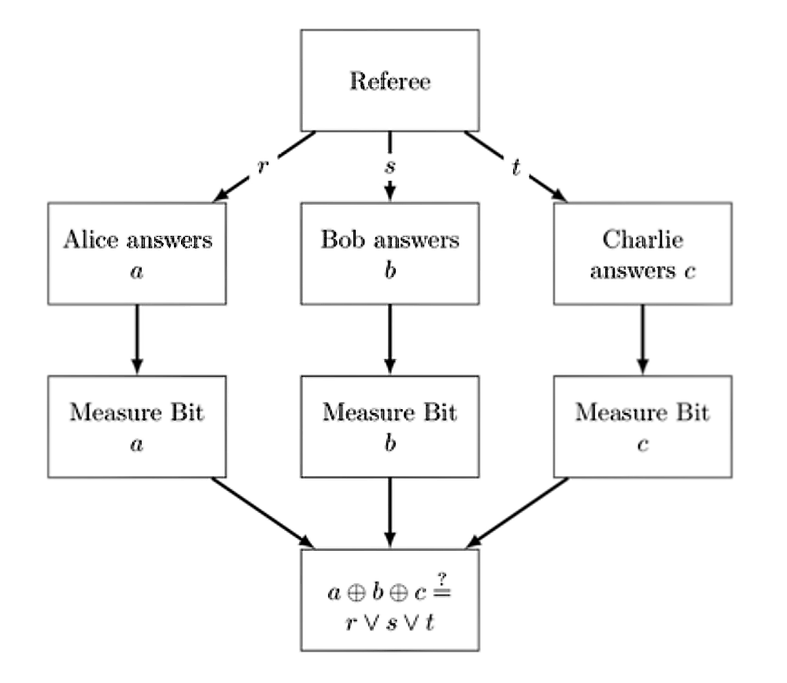

The GHZ Game
November, 2018
This semester I gave a second Alt-Tab talk to the University of Waterloo's Computer Science Club. Like last time, it was a topic related to quantum computing- this time, a game. Games provide a convienient middle-ground between physics and computer science through the application of information theory; which has wide-ranging implications from fields as far flung as data compression, linguistics, and black hole thermodynamics.
The point broke off my pencil just a tad though, in that I forgot the talk was supposed to be more heuristic than specific. I ended up getting a little too mathematical rather than stating the results and talking implications. To that end, I think it's fitting that I explain some of what was going on here, so that any interested attendees who were confused by the admittedly fast-and-loose math aren't left hanging. So without further ado, the GHZ game!
Here's the scheme: we have three players in what we call a "cooperative game" which just means that all the players are not competing with each other, rather (in this case) with chance in the form of a referee who sends the players questions randomly. Each player, say Alice, Bob, and Charlie (later $A$, $B$, and $C$) are handed a question at random from the referee. The referee sends the question $r$ to Alice, $s$ to Bob, and $t$ to Charlie. Each of these participants respond with $a$, $b$, $c$ respectively. Here's a diagram to make things a little easier to chew-

We say that $r,s,t \in \{0,1\}$ and that the bit strings chosen uniformly by the referee are $rst \in \{000,011,101,110\}$. Each player takes the question corresponding to its position in the bit string and answers according to some strategy, such that with Alice returning the answer $a$ and so on, their answers $a,b,c \in \{0,1\}$. The game is won by the players if the addition modulo 2 of the bits $a,b,c$ is equal to the logical disjunction of the referee's questions: here's a table to for the winning outcomes.
$$ \begin{array}{c|d} rst & a \oplus b \oplus c \\ \hline 000 & 0 \\ 011 & 1 \\ 101 & 1 \\ 110 & 1 \\ \end{array} $$Well, how do we win this game? We can see from the table that if Alice, Bob, and Charlie answer 1 no matter what the referee passes to them, then they're going to win with a percentage approaching 75% after repeated trials. It turns out that there is no strategy that can win with 100% certainty, using a classical strategy. The proof of this is straightforward: summing the winning conditions modulo 2, we see that $$ a_0 \oplus b_0 \oplus c_0 = 0 \\ a_0 \oplus b_1 \oplus c_1 = 1 \\ a_1 \oplus b_0 \oplus c_1 = 1 \\ a_1 \oplus b_1 \oplus c_0 = 1 $$ will yeild the result 0 = 1, which is a contradiction. It also turns out that 75% is the best we can hope for, as at least one of the above equations is going to give us a false result.
An important point (though it's pretty simple once you reason through it) is that probabilistic strategies will not do better. A probabilistic strategy is just an average over a deterministic strategy, and you cannot have an average that is better than a best result.
Though it's not all doom and gloom, because we can use quantum effects to our advantage! If we allow Alice, Bob, and Charlie to share entangled bits before they are seperated, we can see that there are strategies which allow the players to win every game. Here's how it works: the players share an entangled state that looks something like $$\ket{\psi} = \frac{1}{2}\ket{000}-\frac{1}{2}\ket{011}-\frac{1}{2}\ket{101}-\frac{1}{2}\ket{110}$$
We have the players, each operating in the standard basis, playing with the following strategy: if a player is passed a question with the value 1, that player applies a Hadamard transformation to their qubit. If their question is of value 0, they do nothing to their qubit. After they perform this operation, they measure their qubit return their answer to the referee. From this, we get two cases, mirroring what we have seen before.
The first case is that in which the players recieve the bitstring $rst=000$ from the referee. This is pretty simple: in this case, all that is returned is 0 for each player, and thus they return $0 \oplus 0 \oplus 0 = 0$ to the referee. That's what we were hoping for! So far, so good.
The next case is a little trickier: if the players recieve any of the other 3 bitstrings, the play goes something like this. We assume that the bitstring received will be the case $rst=110$, but it works in a similar way for each case. In this case, Charlie gets the qubit $\ket{0}$ while Alice an Bob both end up with $$H\ket{1} = \frac{\ket{0}-\ket{1}}{\sqrt{2}}.$$
We remember that $$\ket{\psi} = \frac{1}{2}\ket{000}-\frac{1}{2}\ket{011}-\frac{1}{2}\ket{101}-\frac{1}{2}\ket{110}\\ = \frac{1}{\sqrt{2}}\left(\frac{1}{\sqrt{2}}\ket{00}-\frac{1}{\sqrt{2}}\ket{11}\right)\ket{0}-\frac{1}{\sqrt{2}}\left(\frac{1}{\sqrt{2}}\ket{01}+\frac{1}{\sqrt{2}}\ket{10}\right)\ket{1}.$$ From here, we see that upon applying hadamard gates to the first two qubits in each term, we get $$\left(H \otimes H\right)\left(\frac{1}{\sqrt{2}}\ket{00}-\frac{1}{\sqrt{2}}\ket{11}\right) = \frac{1}{\sqrt{2}}\ket{01}+\frac{1}{\sqrt{2}}\ket{10} \\ \left(H \otimes H\right)\left(\frac{1}{\sqrt{2}}\ket{01}+\frac{1}{\sqrt{2}}\ket{10}\right) = \frac{1}{\sqrt{2}}\ket{00}-\frac{1}{\sqrt{2}}\ket{11}$$
That's a cool result: the application of the Hadamard gates to each of these qubits returns terms that we saw in the original state $\ket{\psi}$. Putting this all together, we're going to get something like this: $$\left(H \otimes H \otimes I\right)\ket{\psi} = \frac{1}{2}\left(\ket{010}+\ket{100}+\ket{001}-\ket{111}\right)$$ which, upon measurement of $a \oplus b \oplus c$ will yeild the desired result of $1$ no matter which state is measured by each player. This will be the case regardless of what bitsting we recieve from the referee, by arguments of mathematical symmetry- though feel free to check for yourself!
We have demonstrated not only that this game in particular is solvable, but that there are quantum strategies to certain games that are strictly better than classical ones. This is a contrived example, but it is a proof of the concept, and helps motivate the field and justify further research.
If you have any interest in classical information theory, I have to recommend Claude Shannon's foundational work A Mathematical Theory of Communication, which is in no exageration the work that originated the field. If you're more interested in quantum information theory, Waterloo's own John Watrous has recently published a book, The Theory of Quantum Information, a draft of which is linked- though you may find a hard copy of the text at Cambridge University Press. For those more interested in quantum theory's relation to mathematical games, I have few resources in mind, though there are portions in Nielsen and Chaung's gold-standard text on the field in broad strokes, namely Quantum Computation and Quantum Information.